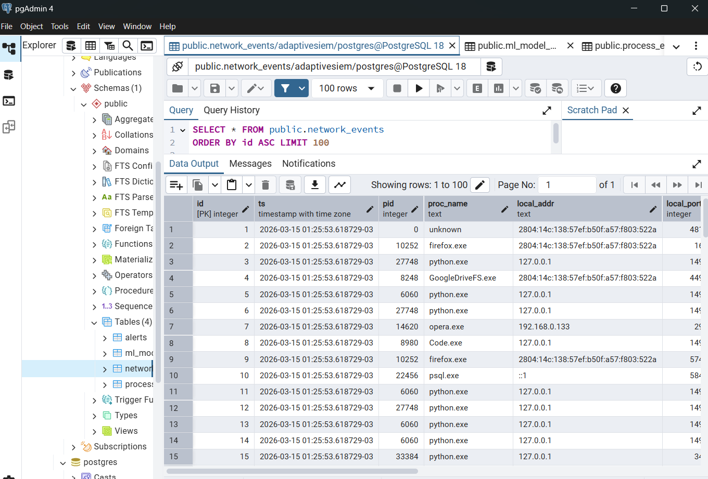
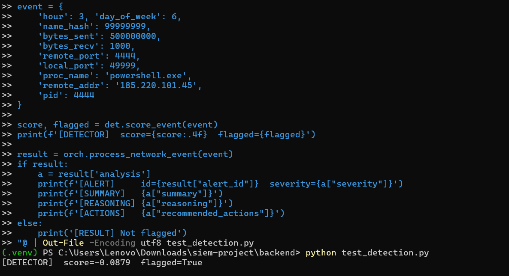
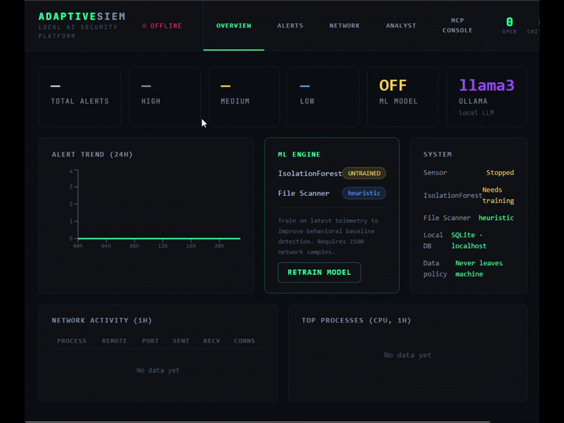
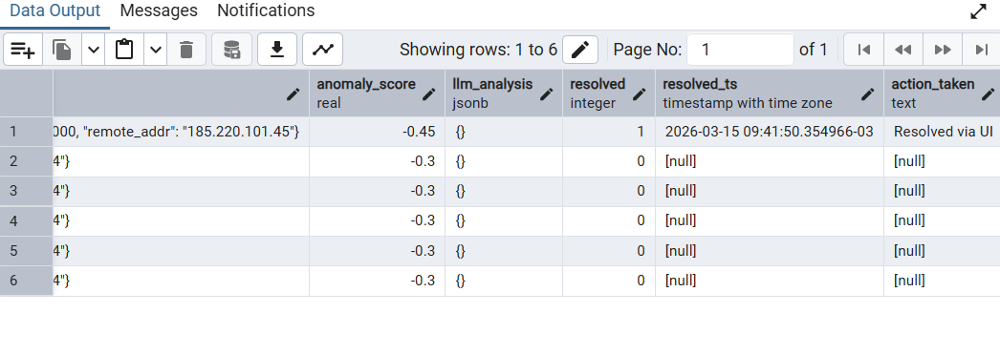
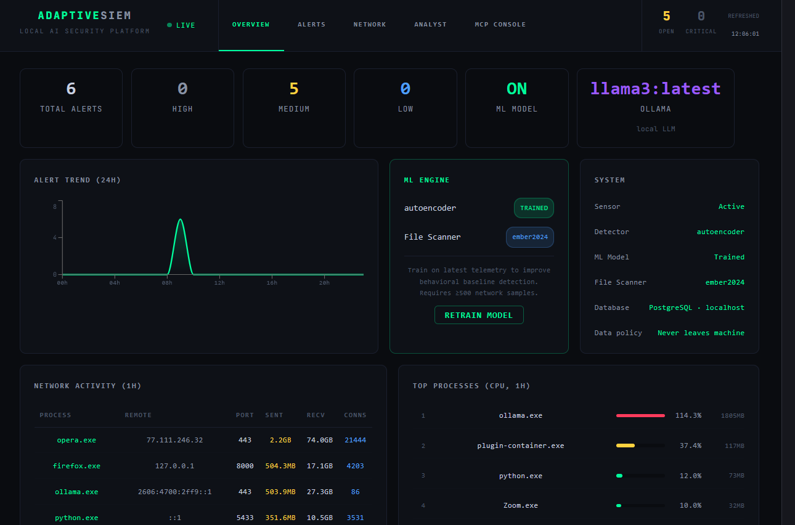

I would have never thought I would be creating my own SIEM one day. Or at least I would have assumed a project like this would take weeks, maybe months, to build properly. The kind of thing that shows up on enterprise job descriptions and costs thousands of dollars in licensing. It turned out to take only a few days, and the reason for that is because I built it together with Claude.
The workflow throughout this project was genuinely different from how I usually approach software. Rather than spending hours reading documentation or debugging boilerplate, I was able to describe the architecture I had in mind and iterate on each piece in conversation. Claude wrote the initial implementations, I tested them, pushed back on design choices, caught edge cases, and shaped the system toward what I actually wanted. The database migration from SQLite to PostgreSQL, the EMBER2024 integration, the Autoencoder, the IsolationForest threshold calibration, all of it happened through that back and forth. It felt less like prompting a tool and more like pairing with someone who could hold the entire codebase in mind at once.
The result is a fully local, privacy-first security platform that monitors your machine in real time, learns your normal behavior, flags anomalies, scans executables for malware, and lets you interrogate any alert through a local LLM running entirely offline. Nothing leaves your machine. This is what that looks like under the hood.
SIEM stands for Security Information and Event Management. In enterprise environments, a SIEM is the central nervous system of a security operations center. It ingests logs and telemetry from across the infrastructure, correlates events, applies detection rules, and surfaces alerts for analysts to investigate. Commercial products like Splunk, Microsoft Sentinel, and IBM QRadar dominate this space, and they are genuinely powerful, but they are also expensive, cloud-dependent, and designed for organizations rather than individuals.
The core idea behind all of them is essentially the same. Collect raw data from the system, normalize it, apply logic to find patterns that look suspicious, and give a human or an automated system enough context to decide what to do. What makes this project different is that every one of those steps happens locally, on your own hardware, using open-source models. There is no subscription, no cloud ingest pipeline, and no vendor with access to your behavioral data. The tradeoff is that you have to set it up yourself, which is exactly what made it an interesting project to build.
The system is organized into four layers. A sensor engine that continuously monitors running processes and network connections using psutil, a local PostgreSQL database that stores all telemetry, a hybrid ML brain that learns normal behavior and scans files, and an agentic orchestrator that routes anomalies to a local LLM for analysis. On top of that sits a React dashboard and an MCP server that exposes sandboxed response actions like blocking an IP or quarantining a file.
The sensor engine runs as a background thread and calls psutil every five seconds. On each tick it iterates over every running process, collecting PID, name, executable path, CPU usage, memory footprint, and status, and over every active network connection, capturing local and remote addresses, ports, bytes sent and received, and connection state. Each event is converted into a structured record and batch-inserted into PostgreSQL.
The feature vector used for machine learning is derived from these raw events. Process name gets hashed into a stable integer. Byte counts are log-transformed to compress the scale. Ports are normalized between 0 and 1. Hour of day and day of week are included directly, because behavioral anomalies are often temporal. A process sending gigabytes at 3 AM looks very different from the same process sending the same amount at noon. All of this lands in a local database that the user owns entirely.

The screenshot above shows the network_events table in pgAdmin after a few hours of collection. Each row is a timestamped connection event with the originating process, remote host, port, and traffic volume. After a typical working session the table reaches tens of thousands of rows, which is more than enough to train a meaningful behavioral baseline.
The ML layer has two distinct jobs. The file scanner looks at executables before or as they appear on disk and scores them for malware likelihood. The behavioral detector watches the live stream of network events and flags anything that deviates from the established baseline. Both are configurable and swappable through a single config file.
For file scanning, the system uses EMBER2024, an open-source malware classifier and dataset released by researchers at FutureComputing4AI and hosted on HuggingFace. EMBER2024 covers 3.2 million files across Win32, Win64, .NET, APK, ELF, and PDF formats, and ships pre-trained LightGBM classifiers for each file type. The feature extraction is handled by the thrember library, which parses raw PE bytes including section headers, entropy, imports, rich headers, and data directories, and produces the input vector for the model. No LIEF dependency required, which was a significant practical advantage when getting this running on Windows.
The Win32 and Win64 models are loaded at startup from the local model directory. When a file scan is requested, the system detects the file type from its magic bytes, routes it to the appropriate model, and returns a threat score between 0 and 1. Scores above 0.8 are flagged and trigger an LLM analysis. A heuristic fallback based on pure struct-based PE parsing activates automatically if the EMBER models are not available.
For behavioral anomaly detection, the system trains an IsolationForest on your own collected network traffic. IsolationForest is an unsupervised algorithm that works by randomly partitioning the feature space. Normal points, which tend to cluster together, require many splits to isolate, while anomalous points get isolated quickly. The decision function returns a continuous score where lower values indicate greater anomalousness, and a configurable threshold determines what gets flagged.
Training happens on demand, after the sensor has collected enough data to characterize your normal usage patterns. The model is then persisted to disk and reloaded on restart. Once trained, every incoming network event is scored in real time. Something like powershell.exe sending 500 MB to port 4444 at 3 AM on a Sunday, a textbook lateral movement signature, scores well below the threshold and triggers the full alert pipeline.

The terminal output above shows the detection pipeline running against a simulated malicious event. The detector assigns a score of -0.0879 against a threshold of -0.05, flagging the event as anomalous. The orchestrator then calls the local LLM, which returns a structured severity assessment, threat type classification, reasoning, and recommended response actions.
The system also supports an Autoencoder as an alternative behavioral detector, switchable through a single line in the config file. The autoencoder is a PyTorch neural network trained to reconstruct normal network event vectors. Its anomaly score is the reconstruction error, so events that look like normal traffic are reconstructed accurately while unusual events produce high error. The detection threshold is set automatically at the 95th percentile of training reconstruction errors, meaning about 5% of training samples sit at the boundary, which is comparable to the IsolationForest contamination parameter. The autoencoder tends to perform better at detecting gradual behavioral drift, where a process slowly shifts its traffic patterns over time rather than producing a sharp outlier. Both detectors share the same feature vector and the same downstream alert pipeline, so switching between them requires no other changes.
The dashboard was built mainly by Claude in React using Recharts for the trend visualizations. The design goal was a SOC terminal aesthetic, dark background, monospace typography, color-coded severity levels, that communicated the real-time nature of the system without feeling like a toy. Claude handled the initial implementation and each iteration of layout fixes, overflow corrections, and chart data type mismatches that came up during testing on real Windows telemetry.
The MCP server (Model Context Protocol) is what turns the dashboard from a passive viewer into an active response tool. It exposes a set of sandboxed action functions to block an IP via iptables, terminate a process by PID, move a suspicious file to quarantine, run a live netstat, query threat intelligence, or resolve an alert. The local LLM analyst running through Ollama can be prompted to call any of these tools directly from the chat interface. The full conversation, including injected alert context, happens offline.
Setting up the system from scratch on Windows took about an hour following a step-by-step guide. The gif below shows the initial state of the dashboard as it comes up before training, with the sensor already streaming data.

After collecting a few hundred network events and clicking Retrain Model, the IsolationForest fits to the local baseline. From that point on, any sufficiently anomalous connection triggers the full pipeline, ML scoring, LLM analysis, alert creation, and appearance in the dashboard. Alerts can be expanded to reveal the raw event, the model's reasoning, and the recommended response actions. The resolve button closes the alert and logs the action to the database.

The final dashboard running with the Autoencoder, EMBER2024 file scanner, Ollama analyst, and live telemetry is shown below. The trend chart shows the alert spike from the detection session. The network activity table shows the actual processes making connections with real byte counts. The system panel confirms every component is active and the data policy is enforced, nothing leaves the machine.

The project ended up being a good demonstration of what AI-assisted development actually feels like when it works well. Not code generation as a shortcut, but a genuine acceleration of the design, implement, test loop. The ideas, the architecture decisions, the debugging intuition, those came from the collaboration. The output is a system I would not have had the time to build alone in the same window, and one that is genuinely useful as a personal security tool.